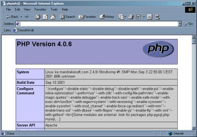

Strings
- A String is a series of characters treated as a single unit: "Jane
Doe", "blue", "To be or not to be ..."
-
In PHP, a character is the same as a byte, that is, there are exactly 256
different characters possible.
- It is no problem for a string to become very large. There is no
practical bound to the size of strings imposed by PHP, so there is no
reason at all to worry about long strings. String values can be used
literally or be assigned to variables.
|
|
- In PHP a string literal can be displayed in two primary ways:
- single quoted strings
- double quoted strings
Single Quoted Strings
- Single quotes provide the easiest method for working with strings.
- Using this method, strings are surrounded by single quotes ('').
- If single quotes are needed as part of the display, they must be escaped
with the backslash ("\") character.
- While single quotes provide an easy method for working with strings,
single quotes do not support the use of interpolation.
sqstrings.php
Online Demo
<?php
//A literal string displayed in the browser window
echo 'PHP was developed in 1994 by Rasmus Lerdorf';
//A literal string assigned to a variable
$string = 'Since its development, PHP has become a popular scripting language.';
echo $string;
//escaping single quotes
echo 'The array contains the values \'2,5,3,4\'.';
//invalid attempt to expand a variable inside of a single quote string
$name = 'John Smith';
echo 'The user's name is $name';
?>
- The first line of output is a result of an echo statement that displays
the literal single quoted string in the browser window.
- The second line of output is displayed after a single quoted string is
assigned to a variable. The variable is then displayed using the echo
statement.
- The next line of output demonstrates the use of the escape character. The
single quoted string contains a set of single quotes used to contain the array
elements.
- Finally, a parse error is generated when a variable is coded inside of a
single quote.
Double Quoted Strings
- PHP strings can also be displayed using double quotes (""). If PHP strings
are enclosed in double quotes, it is possible to take advantage of
interpolation.
- With double quoted strings, PHP also supports more escape characters.
These characters are described in the table below.
| Character |
Description |
| \n |
line feed |
| \r |
carriage return |
| \t |
horizontal tab |
| \\ |
backslash |
| \$ |
dollar sign |
| \" |
double quote |
dqstrings.php
Online
Demo
<?php
echo "PHP is supported by many operating systems.<br>";
$name = "John";
echo "The user's name is $name.<br>";
$fruits = array('grapes', 'peaches', 'strawberries');
echo "My favorite fruit is $fruits[0].<br>";
?>
- The first line displays a double quoted string using the echo statement.
- The second line of output is produced when a string includes a variable.
The variable is expanded and its contents are displayed along with the string.
- Next, an array variable is expanded and displayed along with the string.

String Functions
- PHP includes a number of String functions. The following lists some of the
most common functions.
|
Function |
Description |
|
strlen |
determines the length of a string. |
|
ltrim |
strips whitespace from the beginning of a string. |
|
rtrim |
strips whitespace from the end of a string. |
|
strpos |
find position of first occurrence of a string |
|
strrpos |
find position of last occurrence of a char in a string |
|
strtoupper |
converts string to uppercase. |
|
strtolower |
converts string to lowercase. |
|
strrev |
reverses a string. |
| money_format |
formats a number as a currency string |
| number_format |
format a number with grouped thousands |
| str_replace |
replace all occurrences of the search string with the replacement
string |
| str_split |
convert a string to an array |
- The following block of code demonstrates how to use PHP string functions.
string.php
Online
Demo
<?php
$string = "Hello World";
$another_string = "Welcome to PHP";
echo strlen($string);
echo strtoupper($another_string);
echo strrev($another_string);
echo strpos($string, "W");
?>
- The first line displays the length of the string "Hello World" - 11.
- Next,
the string "Welcome to PHP" is converted to upper case and displayed in the
browser window.
- This string is also used with the strrev function to
reverse the order of the string.
- Finally, the string "Hello
World" is searched until the "W" character is found and the position of "W" in
the string is returned.
Dates and Times
The date() Function
- The date() function is used to format a
time() or a date.
- Unlike the Date() object in JavaScript - date is just a formatted string
representing the current date (and time) on the server.
Syntax
string date (date_format[,int timestamp])
|
- This function returns a string formatted
according to the specified format.
Date Formats
- The table below shows the characters that
may be used in the format string:
|
Character |
Description |
|
a |
"am" or "pm" |
|
A |
"AM" or "PM" |
|
B |
Swatch Internet time
(000-999) |
|
d |
Day of the month
with a leading zero (01-31) |
|
D |
Three characters
that represents the day of the week (Mon-Sun) |
|
F |
The full name of the
month (January-December) |
|
g |
The hour in 12-hour
format without a leading zero (1-12) |
|
G |
The hour in 24-hour
format without a leading zero (0-23) |
|
h |
The hour in 12-hour
format with a leading zero (01-12) |
|
H |
The hour in 24-hour
format with a leading zero (00-23) |
|
i |
The minutes with a
leading zero (00-59) |
|
I |
"1" if the date is
in daylights savings time, otherwise "0" |
|
j |
Day of the month
without a leading zero (1-31) |
|
l |
The full name of the
day (Monday-Sunday) |
|
L |
"1" if the year is a
leap year, otherwise "0" |
|
m |
The month as a
number, with a leading zero (01-12) |
|
M |
Three letters that
represents the name of the month (Jan-Dec) |
|
n |
The month as a
number without a leading zero (1-12) |
|
O |
The difference to
Greenwich time (GMT) in hours |
|
r |
An RFC 822 formatted
date (e.g. "Tue, 10 Apr 2005 18:34:07 +0300") |
|
s |
The seconds with a
leading zero (00-59) |
|
S |
The English ordinal
suffix for the day of the month (st, nd, rd or th) |
|
t |
The number of days
in the given month (28-31) |
|
T |
The local time zone
(e.g. "GMT") |
|
U |
The number of
seconds since the Unix Epoch (January 1 1970 00:00:00 GMT) |
|
w |
The day of the week
as a number (0-6, 0=Sunday) |
|
W |
ISO-8601 week number
of year, weeks starting on Monday |
|
Y |
The year as a
4-digit number (e.g. 2003) |
|
y |
The year as a
2-digit number (e.g. 03) |
|
z |
The day of the year
as a number (0-366) |
date.php
Online
Demo
<?php
//Prints something like: Monday
echo date("l");
//Prints something like: Monday 15th of March 2006 05:51:38 AM
echo date("l dS \\o\f F Y h:i:s A");
//Prints something like: Monday the 15th
echo date("l \\t\h\e jS");
?>
The time() Function
- Returns the current time measured in the number of seconds since the
Unix Epoch (January 1 1970 00:00:00 GMT).
- Used to create and store dates and times that can be compared and used in
an PHP program.
<?php
$nextWeek = time()
+ (7 * 24 * 60 * 60);
// 7 days;
24 hours; 60 mins; 60secs
echo 'Now: '. date('Y-m-d') . "<br>\n";
echo 'Next Week: '. date('Y-m-d', $nextWeek) . "<br>\n";
?>
- The above example will output something similar to:
PHP Autoglobals
- PHP comes with a number of global variable arrays called autoglobals or
superglobals that are pre-created
for you to use:
PHP Autoglobals
| Object |
Description |
$_COOKIE |
An array of values passed to the current PHP page as HTTP
cookies. |
$_ENV |
An array of environment information. |
$_FILES |
An array of information about uploaded files. |
$_GET |
An array of form data the client browser sends with
the request for the PHP page when the form is submitted with the GET method. |
$_POST |
An array of form data the client browser sends with
the request for the PHP page when the form is submitted with the POST
method. |
$_REQUEST |
An array of data the client browser sends with the
request for the PHP page. It includes form data sent with get or
post, and cookie data. |
$_SERVER |
An array of information about the Web Server hosting the PHP
page. |
$_SESSION |
An array of session variables for the current session that is associated with a particular user
and can only be accessed by the current user. |
$GLOBALS |
An array of references to all variables that are defined
with global scope. |
- We have already used the $_GET and $_POST arrays to get a form parameter sent by a
user:
$_GET['name'];
- We will be learning more about the other autoglobal arrays today.
$_SERVER
- All servers hold information such as which
URL the user came from, what's the user's browser, and other information. This
information is stored in variables.
- In PHP, the
$_SERVER is a reserved
variable that contains all server information. The $_SERVER is a global variable
- which means that it's available in all scopes of a PHP script.
Example
- The following example will output which
URL the user came from, the user's browser, and the user's IP address:
server.php
Online
Demo
<html>
<body>
<?php
echo "Referer: " . $_SERVER["HTTP_REFERER"] . "<br />";
echo "Browser: " . $_SERVER["HTTP_USER_AGENT"] . "<br />";
echo "User's IP address: " . $_SERVER["REMOTE_ADDR"];
?>
</body>
</html>
- Note: there are IP to Location databases which can be purchased so
you can look up the country of origin for any IP address and thus customize
your pages to the country of origin.
$_GET and $_POST
- A very powerful feature of
PHP is the way it handles HTML forms!
- The most important thing to notice when
dealing with HTML forms and PHP is that any form element in an HTML page will
automatically be available to your PHP scripts.
- Look at the following example of an HTML
form:
<html>
<body>
<form action="welcome.php" method="POST">
Enter your name: <input type="text" name="name" /><br
/>
Enter your age: <input type="text" name="age" />
<input type="submit" />
</form>
</body>
</html>
- The example HTML page above contains two
input fields and a submit button. When the user fills in this form and hits the
submit button, the "welcome.php" file is called.
- The "welcome.php" file looks like this:
<html>
<body>
Welcome <?php echo $_POST["name"]; ?>.<br />
You are <?php echo $_POST["age"]; ?> years old!
</body>
</html>
- A sample output of the above script may
be:
Welcome Jim.
You are 28 years old!
- Here is how it works: The
$_POST["name"]
and $_POST["age"] variables are automatically set for you by PHP. The
$_POST
contains all POST data.
- Note:
If the method attribute of the form is GET, then the form information will be
set in
$_GET instead of $_POST.
$_REQEST
- An associative array consisting of the contents of
$_GET,
$_POST, and $_COOKIE.
- The example PHP page used to process the welcome HTML page (above) could
be rewritten using the
$_REQUEST array instead.
- The advantage of using the
$_REQUEST is that you
can easily change from GET to POST forms (e.g. after debugging) and not have
to change your forms.
- The disadvantage of using the
$_REQUEST is that
it is possible to have two different fields with the same name (e.g a POST
form element that is then written to a cookie with the same name). In these
situations you might not know which version of the variable you are
referencing.
- The revised "welcome.php" file looks like this:
<html>
<body>
Welcome <?php echo $_REQUEST["name"]; ?>.<br />
You are <?php echo $_REQUEST["age"]; ?> years old!
</body>
</html>
Session Management
- The HTTP protocol is connectionless.
- This means that if you have a multi-servlet Web application, like a
shopping cart, HTTP provides no mechanism for the application to remember the
client.
- Two mechanisms programmers use to track specific users are Cookies and
Sessions.
$_Cookie
- A Cookie is a data file that is written on the user's computer by a
program within a Web page.
- Cookies are often used to store information about:
- Which pages a user has viewed
- How many times a user has visited a Web site
- What information the user has entered on past visits (e.g. login name
and password or customer data)
- What items a user has selected to purchase (shopping cart)
-
A cookie stores information in pairs of variable names and
associated values. Each name/value pair is separated by a semicolon (
;):
userid=mkellog;password=hello;
-
Information in cookies is essentially private. Cookies can only be read by
the same Web site domain name or IP address that created them.
-
However, a cookie written using JavaScript by the client-browser can be read by
a PHP from the same domain.
- The
setcookie() function is used to create
cookies.
- Note:
The
setcookie() function must appear BEFORE the <html> tag.
Syntax
setcookie(name, value, expire, path, domain);
Example
- The following example sets a cookie named
"uname" - that expires after ten hours.
welcome.php
View
Online
<?php
setcookie("uname", $_POST["name"], time()+36000);
?>
<html>
<body>
<p>Welcome <?php echo $_REQUEST["name"]; ?>.<br />
You are <?php echo $_REQUEST["age"]; ?> years old!</p>
<p>A cookie was set on this page! The cookie will be active when
the client has sent the cookie back to the server.</p>
</body>
</html>
How to Retrieve a Cookie Value
- When a cookie is set, PHP uses the cookie
name as a variable.
- To access a cookie you just refer to the
cookie name as a variable.
- Tip:
Use the isset() function to find out if a cookie has been set.
Example
- The following example tests if the uname
cookie has been set, and prints an appropriate message.
cookie_get.php
View
Online
<html>
<body>
<?php
if (isset($_COOKIE["uname"]))
echo "Welcome " . $_COOKIE["uname"] . "!<br />";
else
echo "You are not logged in!<br />";
?>
</body>
</html>
$_SESSION
- PHPs (and other server side programming languages) have another session management option that uses the
$_SESSION array.
- Session support in PHP consists of a way to preserve certain data across
subsequent accesses. This enables you to build more customized applications
and increase the appeal of your web site.
- This is a high-level interface that creates a unique session id for a set
of user interactions. The session id is "remembered" using cookies if the
browser supports them, but or URL-rewriting when
cookies are unsupported or explicitly disabled.
- The session support allows you to register arbitrary numbers of variables
to be preserved across requests.
- When a visitor accesses your site, PHP will check automatically (if
session.auto_start is set to 1) or on your request (explicitly through
session_start() or implicitly through
session_register()) whether a specific session id
has been sent with the request. If this is the case, the prior saved
environment is recreated.
<?php
session_start();
// Use $HTTP_SESSION_VARS with PHP 4.0.6 or less
if (!isset($_SESSION['count']))
{
$_SESSION['count']
= 0;
} else {
$_SESSION['count']++;
}
?>
A Session Management Example
- The form below calls a PHP that writes session parameters that then
can be read by other PHP pages.
(session.php)
<HTML>
<HEAD>
<TITLE>Session Management Example</TITLE>
</HEAD>
<BODY>
<?php
// get the form parameters
$email = $_POST["email"];
$person = array($name, $email);
if(!isset($_SESSION['start']))
$_SESSION["start"] = date("m-d-20y h:i:s a");
?>
<H1>User Data Processed</H1>
<?php // if called with a form
if ($name!=null)
{ ?>
<h2>You input the following data:</h2>
<ul>
<li><b>Name:</b><?php echo $name ?></li>
<li><b>Email:</b><?php echo $email ?></li></ul>
<br><a href="session2.php">Continue</a>
<?php } else echo("<p>Error in the form data. Go to <a href=session.html>session.html</a></p>");
?>
</BODY>
</HTML>
(session2.php)
<HTML>
<HEAD>
<TITLE>Second Session PHP Page</TITLE>
</HEAD>
<BODY>
<H1>Continuing User Session</h1>
<?php
session_start();
if (isset($_SESSION['person']))
{
$p = $_SESSION["person"];
$now = $_SESSION["start"];
echo("<h2>You are:</h2>");
echo("<ul>");
echo("<li><b>Name:</b> " . $p[0] . "</li>");
echo("<li><b>Email:</b> " . $p[1] . "</li>");
echo("<li><b>Your Session Started:</b> $now");
}
else
echo("<p>Error in the session data</p>");
?>
</BODY>
</HTML>
PHP Built-in Functions
The phpinfo() function options
| Name
| Description
|
|
INFO_GENERAL |
The configuration
line, php.ini location, build date, Web Server, System and more |
| INFO_CREDITS |
PHP 4 credits |
| INFO_CONFIGURATION |
Local and master
values for php directives |
| INFO_MODULES |
Loaded modules |
| INFO_ENVIRONMENT |
Environment variable
information |
| INFO_VARIABLES |
All predefined
variables from EGPCS (Environment, GET, POST, Cookie, Server) |
| INFO_LICENSE |
PHP license
information |
| INFO_ALL |
Shows all of the
above. This is the default value |
Example
phpinfo.php View Online
<html>
<body>
<?php
// Show all PHP information
phpinfo();
?>
<?php
// Show only the general information
phpinfo(INFO_GENERAL);
?>
</body>
</html>
- You should get a page that looks something like this

PHP Header() Function
- The header() function is used to send raw
HTTP headers over the HTTP protocol.
- Note:
This function must be called before anything is written to the page!
Example
The following example will redirect the
browser to the following URL: http://ouray.cudenver.edu/~dgregg:
<?php
//Redirect browser
header("Location: http://ouray.cudenver.edu/~dgregg");
?>
<html>
<body>
......
</body>
</html>
PHP Include Files (SSI)
- Server Side Includes (SSI)
are used to create functions, headers, footers, or elements that will be reused
on multiple pages.
Server Side Includes
- When you design a Web site you often want to provide the same navigation
links and footer on each of the Web pages.
- Using standard HTML this code would be repeated on every Web page and if
any of the links changed they would have to be updated on every Web page.
- PHP allows you to place the repeated header, menu & footer code in
separate files and then allowing you to include these other files in your PHP
pages.
- You insert the content of one file
into another file before the server executes it, with the require() function.
The require() function is used to create functions, headers, footers, or
elements that will be reused on multiple pages.
- This can save the developer a considerable
amount of time. If all of the pages on your site have a similar header, you can
include a single file containing the header into your pages. When the header
needs updating, you only update the one page, which is included in all of the
pages that use the header.
Example
- The following example includes a header
that should be used on all pages:
<html>
<body>
<?php require("header.htm");
?>
<p>Some text</p>
<p>Some text</p>
</body>
</html>
- The Sample Outdoor Depot Web page/site (which you will be creating using
the outdoor depot tutorial) uses 4 include files for the header, left menu,
right menu and footer to allow the common elements for the web site to be
easily updated and shared among all of the pages on the site.
Online Demo

PHP File Processing Functions
Opening a File
- The
fopen()function is used to open files
in PHP.
- The first parameter of this function
contains the name of the file to be opened and the second parameter specifies in
which mode the file should be opened in:
<html>
<body>
<?php
$filein=fopen("data.txt","r");
?>
</body>
</html>
- The file may be opened in one of the
following modes:
| File Modes |
Description |
|
r |
Read only. File
pointer at the start of the file |
|
r+ |
Read/Write. File
pointer at the start of the file |
|
w |
Write only.
Truncates the file (overwriting it). If the file doesn't exist, fopen() will
try to create the file |
|
w+ |
Read/Write.
Truncates the file (overwriting it). If the file doesn't exist, fopen() will
try to create the file |
|
a |
Append. File pointer
at the end of the file. If the file doesn't exist, fopen() will try to
create the file |
|
a+ |
Read/Append. File
pointer at the end of the file. If the file doesn't exist, fopen()will try
to create the file |
|
x |
Create and open for
write only. File pointer at the beginning of the file. If the file already
exists, the fopen() call will fail and generate an error. If the file does
not exist, try to create it |
|
x+ |
Create and open for
read/write. File pointer at the beginning of the file. If the file already
exists, the fopen() call will fail and generate an error. If the file does
not exist, try to create it |
- Note: If the
fopen() function is unable to open the specified file, it returns 0
(false).
Example
The following example generates a message
if the fopen() function is unable to open the specified file:
<html>
<body>
<?php
if (!($filein=fopen("data.txt","r")))
exit("Unable to open file!");
?>
</body>
</html>
Closing a File
The fclose() function is used to close a
file.
fclose($filein);
Reading from a File
- The
feof() function is used to determine
if the end of file is true.
- Note:
You cannot read from files opened in w, a, and x mode!
if (feof($filein))
echo "End of file";
Reading a Line
- The
fgets() function is used to read a
single line from a file.
- Note: After a call to this function the file pointer has moved to the next line.
Example
- The example below reads a file line by line, until the end of file is true:
data.php
Online
Demo View
File
<?php
if (!($filein=fopen("data.txt","r")))
exit("Unable to open file.");
while (!feof($filein))
{
$x=fgets($filein);
echo $x . "<br>\n";
}
fclose($filein);
?>
Creating a PHP Hit Counter Program
- A counter is an essential part of a site to know how many people are
coming to site and is a simple commonly used program.
- To create a counter program you need to be able to read from and write
to a file that exists on the server.
- Remember from or form file examples - to write to a file you first
need to change the file permissions for the file (using
chmod
on a unix machine).
counter.php
Online
Demo
View
File
<HTML>
<HEAD>
<TITLE>PHP Counter Program</TITLE>
</HEAD>
<BODY>
<H1>PHP Counter</h1>
<?php
if (!($filein=fopen("counter.txt","r+")))
exit("Unable to open file.");
$count=(int)fgets($filein);
$start=fgets($filein);
echo "<p><i>You are the " . $count++ ";
echo " visitor to this site since $start</i></p>\n";
// move back to the beginning of the file
// same as rewind($filein);
fseek($filein, 0);
fwrite($filein,"$count
$start");
fclose($filein);
?>
</BODY>
</HTML>
- Note: Frequently you want to track the number of unique visitors to
your site. You can uses sessions to see if this is a new visitor to the
site and if it is increment the counter. You do not need to display the
hit count to the screen.
Other Materials